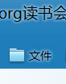

Conversation with 81184027 at Sun 01 Jun 2014 08:38:25 PM CST on 154115835 (webqq)
(06/01/2014 07:55:38 PM) 阿萨汗蛋包飯: 和谐的很！主要是骑乘位
(06/01/2014 07:55:50 PM) 阿萨汗蛋包飯: 骑乘位挺卖力的
(06/01/2014 07:55:38 PM) 阿萨汗蛋包飯: 和谐的很！主要是骑乘位
(06/01/2014 07:55:50 PM) 阿萨汗蛋包飯: 骑乘位挺卖力的
(08:38:56 PM) lost message from #128920 to #128968
(08:39:43 PM) 蔚蓝的天空: 屡教不改 至于死地
(08:25:17 PM) 阿萨汗蛋包飯: 看了《中国现代化的陷阱》说的都是大实话
(08:25:34 PM) 潮哥: 在哪里看的
(08:25:43 PM) 阿萨汗蛋包飯: 这种全社会性的道德败坏，可以说是前所未有，有人形像地将之概括成“有肉的卖肉，有灵魂的卖灵魂”。
(08:25:49 PM) 阿萨汗蛋包飯: 群贡献的文件
(08:25:57 PM) 阿萨汗蛋包飯: 群共享里面的文件
(08:27:00 PM) 潮哥: 好的
(08:27:07 PM) 潮哥: 现代化都是忽悠
(08:28:26 PM) 潮哥: 农民进城干嘛去
(08:28:43 PM) 阿萨汗蛋包飯: 有肉的卖肉，有灵魂的卖灵魂
(08:30:33 PM) 潮哥: 灵魂卖给谁
(08:35:55 PM) 蔚蓝的天空: 大乱才能大治
(08:36:13 PM) 潮哥: [去SHI]
(08:36:33 PM) 阿萨汗蛋包飯: 工人的工资发不出，而企业经理却大发其财，这种所谓“富了住持穷了庙”的现象在 1978年以后的中国相当普遍。
(08:36:54 PM) 蔚蓝的天空: 只有隐藏的邪恶暴露出来才能治理
(08:37:04 PM) 蔚蓝的天空: 才能有效打击
(08:37:18 PM) 蔚蓝的天空: :face13:
(08:37:22 PM) 潮哥: 相信本届正腐
(08:37:40 PM) 潮哥: 是吧
(08:38:18 PM) 蔚蓝的天空: 以暴治暴 武力打击 而后教育
(08:39:43 PM) 蔚蓝的天空: 屡教不改 至于死地
(08:39:46 PM) 蔚蓝的天空: :face13:
(08:26:14 PM) 阿萨汗蛋包飯: 
(08:39:58 PM) 蔚蓝的天空: 请相信本届政府
(08:39:59 PM) 阿赑: 你们真能聊
(08:40:27 PM) 阿赑: 合着你不相信上届政府了？
(08:41:13 PM) 蔚蓝的天空: :D
(08:48:05 PM) 蔚蓝的天空: 总说宇宙你全能，少点邪毒行不行， 随便就夺人性命，非需这样表忠诚？ 哪年修的心如兽？马劣隔逼第几层？ 正路沧桑你不走，偏来华夏造冤灵？--骂全能教--
(08:48:33 PM) 蔚蓝的天空: :D
(08:48:39 PM) 潮哥: 五毛
(08:48:41 PM) 潮哥: 可悲
(08:50:20 PM) 潮哥: 被洗脑了，还那么高兴，脑残
(08:50:56 PM) 蔚蓝的天空: 总说宇宙你全能，少点邪毒行不行， 随便就夺人性命，非需这样表忠诚？ 哪年修的心如兽？马劣隔逼第几层？ 正路沧桑你不走，偏来华夏造冤灵？--骂全能教--
(08:51:29 PM) 潮哥: [吓尿了]
(08:54:36 PM) 蔚蓝的天空: 有消息说去年山西临汾6岁男童被挖眼事件也与此邪教有关
(08:59:13 PM) 阿萨汗蛋包飯: 总之，在时下的中国，不少国企老板侵吞国有资产己是公开的秘密。
(09:00:19 PM) 潮哥: 这个是必须的
(09:00:20 PM) 蔚蓝的天空: 总说宇宙你全能，少点邪毒行不行， 随便就夺人性命，非需这样表忠诚？ 哪年修的心如兽？马劣隔逼第几层？ 正路沧桑你不走，偏来华夏造冤灵？--骂全能教
(09:01:04 PM) 蔚蓝的天空: 迟早要还的 吃多了会吐的
(09:01:07 PM) 蔚蓝的天空: :D
(09:00:56 PM) 光: 80%的财富被20%的人占有
(09:01:02 PM) 光: 吃多了不吐
(09:02:20 PM) 蔚蓝的天空: 不吐会消化不良
(09:01:44 PM) 光: 吃多了移民了
(09:02:37 PM) 蔚蓝的天空: 会得胃癌
(09:02:47 PM) 蔚蓝的天空: 跑不了的
(09:03:05 PM) 光: 你比我还理想主义呢
(09:03:11 PM) 光: 怎么跑不了
(09:04:29 PM) 蔚蓝的天空: 离了家就是孤魂野鬼
(09:04:00 PM) 光: 土地观念是么
(09:04:08 PM) 光: 我觉得这点还好
(09:04:15 PM) 光: 很多人一起移民就不存在
(09:05:06 PM) 蔚蓝的天空: 跑出去也改变不了他中国人
(09:04:23 PM) 光: 现在世界各地都有华人还不少
(09:04:35 PM) 光: 没啥不适应的
(09:06:12 PM) 蔚蓝的天空: 华人多对中国成为世界霸主有帮助
(09:05:30 PM) 光: 贪了那么多钱，在国内又不敢花
(09:05:37 PM) 光: 肯定境外消费了
(09:06:46 PM) 蔚蓝的天空: 中国有句话 叫打断骨头连着筋
(09:07:12 PM) 阿萨汗蛋包飯: 去美国花呀。美国豪宅豪车
(09:07:47 PM) 蔚蓝的天空: 买黄金最好 还有买古董
(09:07:08 PM) 光: 我们是鹅城
(09:08:03 PM) 蔚蓝的天空: 将来都是中国的
(09:08:27 PM) 蔚蓝的天空: :D
(09:07:46 PM) 光: 一方风土养一方人
(09:09:00 PM) 蔚蓝的天空: 再养他还是中国人
(09:09:30 PM) 蔚蓝的天空: 改变国籍 也没用
(09:10:42 PM) 蔚蓝的天空: 一旦发动战争 跑出去的人还是会为国出力的
(09:10:11 PM) 光: 不过好像独立思考的人越来越多了
(09:10:29 PM) 光: 也许不久的将来
(09:11:22 PM) 蔚蓝的天空: 身上烙着中国印
(09:10:37 PM) 光: 鹅城就要变天了
(09:11:42 PM) 光: 人的总量就这么多
(09:11:46 PM) 光: 多一个独立思考的人
(09:12:03 PM) 光: 就少一个精神附庸的人
(09:12:21 PM) 光: 独立思考的人还是越来越多的
(09:13:18 PM) 潮哥: 快了，我们有生一年能看到
(09:12:36 PM) 光: 嗯
(09:13:48 PM) 潮哥: 有生之年绝对可以
(09:13:06 PM) 光: 会的
(09:14:00 PM) 蔚蓝的天空: 你看不到的
(09:14:14 PM) 蔚蓝的天空: 你这辈子没希望了
(09:14:26 PM) 潮哥: 肯定会， 期待
(09:14:40 PM) 蔚蓝的天空: 呵呵
(09:14:41 PM) 潮哥: 是什么样的情况呢
(09:15:01 PM) 潮哥: 空大屎，你就是一条狗
(09:15:11 PM) 蔚蓝的天空: 独立的人太多不是好事
(09:15:26 PM) 蔚蓝的天空: 你就是民族的蛀虫
(09:15:28 PM) 潮哥: 黄四郎的一条狗
(09:16:07 PM) 蔚蓝的天空: 天不会变 国也不会变
(09:16:16 PM) 蔚蓝的天空: :D
(09:16:49 PM) 潮哥: 你大爷会变
(09:16:51 PM) 蔚蓝的天空: 我天朝盛世不会变
(09:17:25 PM) 蔚蓝的天空: 你会变 变成潮虫
(09:17:28 PM) 潮哥: 世界上只有时间和空间是永恒的
(09:16:42 PM) 光: 独立思考的人越多
(09:16:49 PM) 光: 邪教就没有人信了
(09:17:38 PM) 蔚蓝的天空: 阴暗角落的潮虫
(09:17:03 PM) 光: 这才是根本解决之道
(09:18:00 PM) 蔚蓝的天空: 基督也没人信了
(09:17:25 PM) 光: 让大家自己选择
(09:17:38 PM) lost message from #129048 to #129048
(09:18:25 PM) 潮哥: 基督不是邪教
(09:18:28 PM) 蔚蓝的天空: 把国外传播的垃圾教
(09:17:44 PM) 光: 信仰是每个人自己的问题
(09:18:41 PM) 蔚蓝的天空: 基督是邪教的根源
(09:19:08 PM) 潮哥: 那欧美都是邪教了？？
(09:19:16 PM) 蔚蓝的天空: 信基督的人更容易信邪教
(09:18:34 PM) 光: 经过个人理性思考之后决定参加的都是值得肯定的
(09:19:37 PM) 阿萨汗蛋包飯: 哈哈，邪教不邪
(09:19:45 PM) 阿萨汗蛋包飯: 邪恶的教，美国是邪教集中营
(09:19:47 PM) 蔚蓝的天空: 难道基督没有引起战乱
(09:20:04 PM) 蔚蓝的天空: 蛋包说了句人话
(09:20:36 PM) 蔚蓝的天空: 赵教主要是让美国人全信全能
(09:20:45 PM) 潮哥: 人家是信仰自由
(09:21:17 PM) 蔚蓝的天空: 那就是功臣了 赵教主要把美元骗到中国
(09:21:36 PM) 蔚蓝的天空: 自由就会出事
(09:21:45 PM) 潮哥: 如果兲朝是民主自由社会，何来赵维山？何来去申请避难
(09:21:51 PM) 蔚蓝的天空: 人需要有约束
(09:22:13 PM) 蔚蓝的天空: 没有约束的那不是人
(09:22:29 PM) 蔚蓝的天空: 人要和兽有区别
(09:22:32 PM) 潮哥: 我看你不是人，
(09:22:36 PM) 蔚蓝的天空: :D
(09:22:55 PM) 蔚蓝的天空: 你不是人
(09:23:23 PM) 蔚蓝的天空: 因为你诋毁自己的家
(09:23:41 PM) 蔚蓝的天空: 你骂自己的娘
(09:24:16 PM) 光: MBTI测试
MBTI职业性格测试完整版: http://types.yuzeli.com/survey/mbti88/
MBTI-M人格类型量表： http://types.yuzeli.com/survey/MBTI/
凯尔西气质类型测试： http://types.yuzeli.com/survey/keirsey/
(09:24:28 PM) 光: 不要吵了，做一下性格测试
(09:24:46 PM) 光: MBTI职业性格测试完整版: http://types.yuzeli.com/survey/mbti88/
(09:24:48 PM) 光: 这个
(09:25:49 PM) 蔚蓝的天空: 人的行为需要约束
(09:25:57 PM) 蔚蓝的天空: 你们不是整天制度吗
(09:25:14 PM) 光: @ 蔚蓝的天空
(09:25:21 PM) 光: 你做一下我帮你看看
(09:26:47 PM) 蔚蓝的天空: :D
(09:26:13 PM) 光: 没事的
(09:27:28 PM) 蔚蓝的天空: 性格测试吗
(09:26:45 PM) 光: 嗯
(09:26:50 PM) 光: 这个我用下来还不错
(09:28:11 PM) 蔚蓝的天空: 上一家单位同事说我外向 这家说我内向
(09:27:31 PM) 光: 自己测
(09:27:34 PM) 光: 不听别人说
(09:28:30 PM) 蔚蓝的天空: 明天测试吧
(09:27:48 PM) 光: 行
(09:29:19 PM) 蔚蓝的天空: 我经受过测谎的训练
(09:28:40 PM) 光: 哦
(09:28:55 PM) 光: 我好像在一个片子里面看到过
(09:29:06 PM) 光: 是不是挺折磨人的那种
(09:29:16 PM) 光: 要注射什么药水
(09:30:15 PM) 蔚蓝的天空: 我的没那么严重
(09:29:31 PM) 光: 哦
(09:30:25 PM) 蔚蓝的天空: 那是特种兵
(09:29:42 PM) 光: 嗯
(09:30:50 PM) 蔚蓝的天空: 我参与抓捕过间谍
(09:30:07 PM) 光: 嗯
(09:31:46 PM) 蔚蓝的天空: 一次有人在山头对我们营区拍照
(09:31:04 PM) 光: 嗯
(09:32:02 PM) 蔚蓝的天空: 经常在营区附近活动
(09:31:20 PM) 光: 嗯
(09:32:43 PM) 蔚蓝的天空: 新疆有美国和日本派去间谍
(09:32:01 PM) 光: 嗯
(09:32:59 PM) 阿萨汗蛋包飯: 西藏也有，不奇怪
(09:33:20 PM) 阿萨汗蛋包飯: 美日韩同盟想分裂中国
(09:33:46 PM) 蔚蓝的天空: 曾经抓捕过一个从巴基斯坦恐怖基地回来的
(09:33:08 PM) 光: 嗯
(09:34:14 PM) 阿萨汗蛋包飯: 是不是本拉登手下的穆斯林
(09:34:54 PM) lost message from #129113 to #129115
(09:35:23 PM) 蔚蓝的天空: 他说基地练习射击的头像是美国总统
(09:35:29 PM) 蔚蓝的天空: :D
(09:34:50 PM) 阿萨汗蛋包飯: 天空会武术啊
(09:34:57 PM) 阿萨汗蛋包飯: 还会抓人，武警？
(09:35:18 PM) 阿萨汗蛋包飯: 身上有没有子弹孔:D
(09:35:49 PM) 蔚蓝的天空: 他有只手表 有很多功能
(09:36:49 PM) 蔚蓝的天空: 从他身上搜到的
(09:37:16 PM) 蔚蓝的天空: 当兵总是要练点的
(09:38:00 PM) 蔚蓝的天空: 伤疤有 训练伤
(09:37:35 PM) 光: 嗯
(09:38:41 PM) 蔚蓝的天空: 和东突的人长有交道
(09:38:50 PM) 潮哥: 手艺者的
(09:39:01 PM) 阿萨汗蛋包飯: 90年代初：“犯大法挣大钱，犯小法挣小钱，不犯法不挣钱。”如今：“捞它几十万，最多判它十几年。”
(09:38:31 PM) 光: 东突的人是群怎样的人
(09:39:31 PM) 蔚蓝的天空: 每天至少三个小时的体能训练
(09:38:55 PM) 光: 嗯
(09:39:43 PM) 阿萨汗蛋包飯: 穆斯林吧
(09:40:19 PM) 潮哥: 空大屎当过武警，怪不得被洗脑
(09:39:49 PM) 光: 这叫政治过硬
(09:40:37 PM) 蔚蓝的天空: 关于东突一时说不完
(09:39:54 PM) 光: 嗯
(09:40:02 PM) 光: 说说基本的
(09:40:53 PM) 潮哥: 是啊
(09:40:53 PM) lost message from #129136 to #129137
(09:41:24 PM) 蔚蓝的天空: 政治思想强 军事技术精 完成任务好
(09:40:56 PM) 潮哥: 说吧
(09:41:02 PM) 潮哥: 五毛
(09:41:50 PM) 阿萨汗蛋包飯: 天空厉害是东突厉害？
(09:41:52 PM) 潮哥: 洗的彻底
(09:42:06 PM) 潮哥: 肯定是空大屎
(09:41:24 PM) 光: 军队肯定不能思想自由的
(09:41:28 PM) 光: 不然就哗变了
(09:42:19 PM) 蔚蓝的天空: 操哥你一边去吧
(09:42:19 PM) 阿萨汗蛋包飯: 东突可以不要命
(09:42:23 PM) 阿萨汗蛋包飯: 你死我也死
(09:42:33 PM) 阿萨汗蛋包飯: 不怕死的人，天空能比吗
(09:42:35 PM) 蔚蓝的天空: 军人就要爱国
(09:41:49 PM) 光: 兵变国家就瞬间崩溃了
(09:42:40 PM) 山东-滨州-易宝: 理想科技集团-弘晟系统
http://blog.sina.com.cn/binzhouyandi
智者先行、强强联手，没试运营就拿牌的合法直销公司，产品卖点多，全国市场空白一片，招募有志之士共谋事业，抢占先机！先机属于智者！
(09:42:43 PM) 潮哥: 空大屎可以不要命吗
(09:42:43 PM) 阿萨汗蛋包飯: 与你同归于尽！是恐怖主义的终极形式
(09:42:05 PM) 光: ok
(09:42:11 PM) 光: 我换系统踢人
(09:42:14 PM) 光: 发广告的
(09:43:02 PM) 蔚蓝的天空: 是的 光
(09:42:20 PM) The account has disconnected and you are no longer in this chat. You will automatically rejoin the chat when the account reconnects.